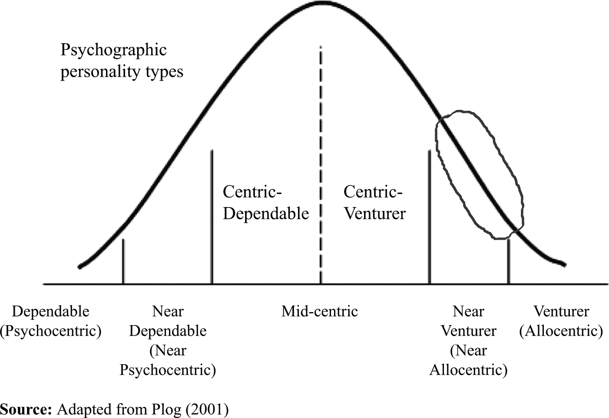
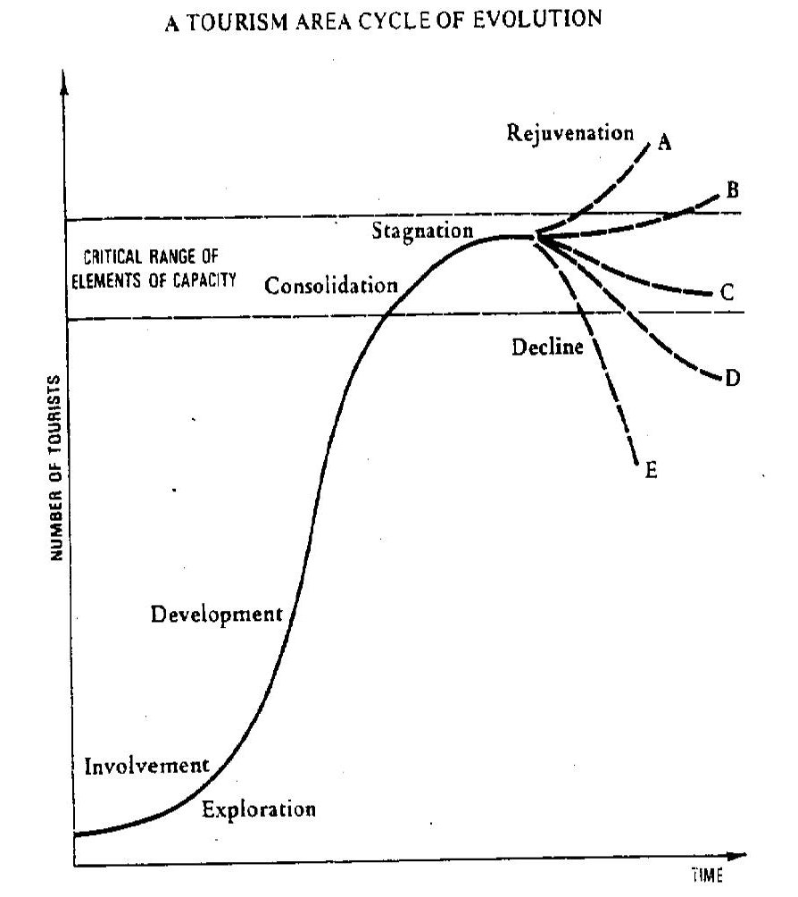

Aliza Tours
(Ali Almasoud + Zach Belford)
... Is a tourism package distributer and wholesaler. We offer Indonesian travel packages to satisfy your need for cultural learning, ecological exploration, and relaxation.
Our trip is designed with a few principle goals
- Minimize social and cultural impact
- Minimize environmental impact
- Provide locals of south Indonesia with a direct income stream
- Offering an escape from ones comfort zone, while also allowing for relaxation
- Provide an unparalleled learning experiences at an affordable cost
- Travel risk management
- Sustainable and socioculturally responsible travel
The Island of Java: General
- One of most densly populated places in the world
- Year round temperature range: 26–30°C
- Capital City is Jakarta
- Formed as result of volcanic erruption
- Main Languages Javanese, Indonesian, English
- Majorily Muslim
- Economic staple: take a guess...!
- 4 Provinces:
- West Java
- Central Java
- East Java
- Banten
The Island of Java: History
- Home of much of Indonesia's history
- Center of Hindu-Buddhist empires
- 1811: Captured by the British
- Center of Indonesian struggle for independence (1930's & 40's)
The Island of Bali: General
- Capital is Denpasar
- 26–30°C
- 2000 Census showed 92% Balinese Hinduism
- The remainder mostly Islamic
- Highly developed arts scene
- 80% local economy depends on tourism [source: Aryn Baker, Time Magazine]
The Island of Bali: History
- Originally inhabited by the Austronesian People
- Ancient Bali had 9 distinct Hindu sects
- Balinese culture strongly influened by
- Indian
- Chinese
- Particularily Hindu
- Invaded by the Dutch in early 1900's
The Balinese Culture
- Sekala and Niskala
- Temple Festivals
- Hindu Dharma
Cultural and Environmental Impact
- Many physical and behavioural aspect of other cultures are very noticeable
- Bali’s environment is facing serious degradation due to over-exploitation by the tourism industry
Socio-Cultural Impact
- Changing in consumption patterns
- Prostitution and sex tourism
- Child labour
Economic Impact
- Strong dependency on the success of tourism
"Bali's economy is moving far faster than the rest of the country. Balinese proudly buzz around on motorscooters. They rarely have to look far for work."
- The Paradise Paradox, Keith Loveard
Price
- Bali
- Java
- Surabaya: 70$
- Tosari: 75$
- Yogyakarta: 115$
- Baturaden: 60$
- Bandung: 85$
- Jakarta: 1100$
Total: 2265$
- Includes:
- 95% of meals
- Accomodation
- All transportation
Market Analysis
- Demographic
- Male and female full time workers between the age of 25-65
- Income between $30000-$60000
- Educated
- Behavioural
- Loyal
- Recurrent customers
Market Analysis
- Pyschographic
- Seek some degree of Graburn's inversions
- Environmental inversion - Warm Climate
- Lifestyle inversion - thrift, simplicity, leisure
- Formality inversion - Flexible, formal
- Health inversion - tranquility, exercise, rejuvenation
- VALS groups of interest
- Believers
- Strivers
- Experiencers
- Plog's Continuum
- Believers
- Strivers
- Experiencers
Psychographic Market (Plog's)

Marketting Mix
- Product
- Seven nights cultural and ecotourism trip from Calgary to Indonesia including multiple island destinations
- Place
- This product can be purchased in travel agencies in southern Alberta, Canada
- Price
- Promotion
- Demand curve favors travelling during winter months
- Marketed in year round, demand regulated through price elasticity measure
- Magazines
- Tourism Websites
- Radio
- Newspaper
The Tourism Industry in Indonesia
- Tourism is not a significant source of GDP
- Terrorist Bombings of 2002 and 2005
- 'High Threat of terrorist attack' - gov.com.au
- Severe penalty for narcotic-related offences - Death Penalty
- Subject to a range of natural disasters
- Still a thriving tourism industry
- 2008 Currency drop 30%
- 2009 saw 8% drop
- Particularily Hindu
- Invaded by the Dutch in early 1900's
- Bali officials take a more active role in tourism development, Java not so much...
Butler's Life Cycle Model

Challenges
- Managing risks due to:
- Recent terrorist activities
- Natural disasters
- Strict law enforcement
- Establishing good relations with homestays